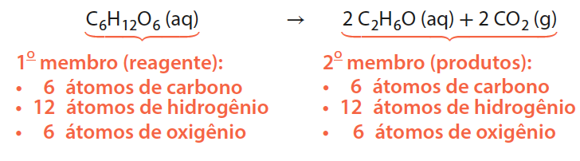
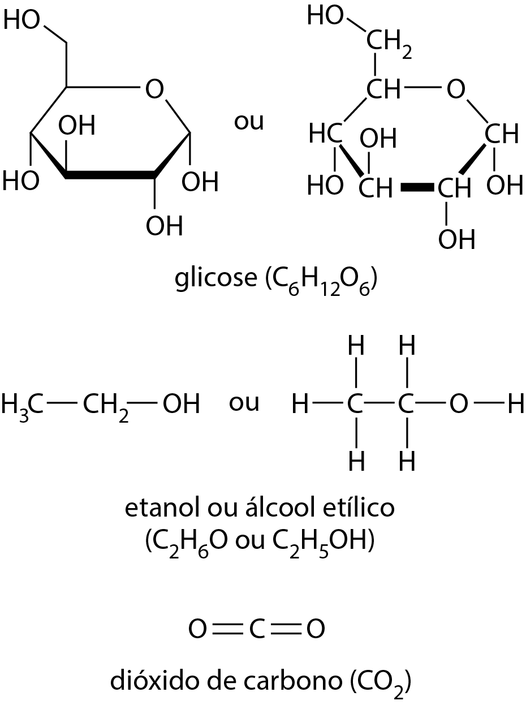
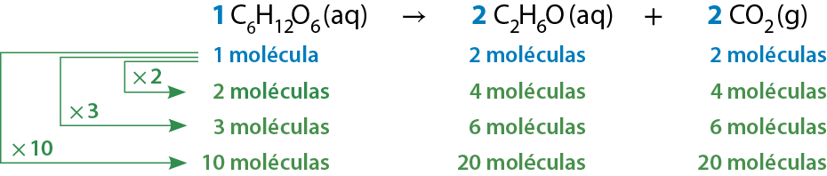
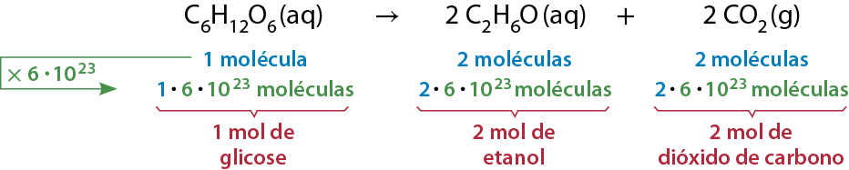
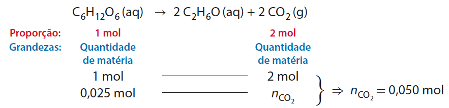
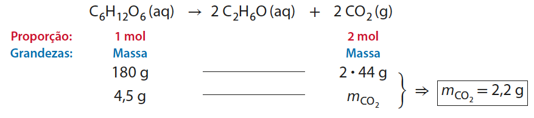
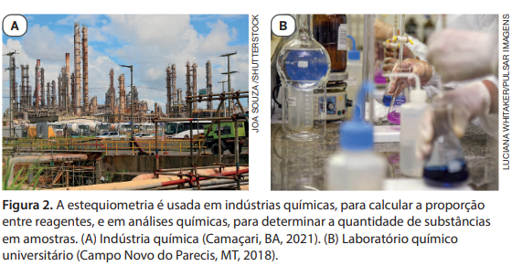
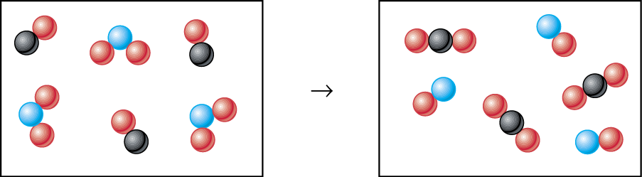

Proporção nas reações químicas: estequiometria
Na panificação tradicional, que emprega fermento biológico, após a mistura dos ingredientes ocorre uma reação de fermentação que produz dióxido de carbono dentro da massa. São as bolhas formadas por esse gás que conferem textura porosa ao pão. Quando a massa vai ao forno, o aquecimento provoca a expansão dessas bolhas, resultando naqueles buraquinhos no interior de um pão.
A levedura conhecida cientificamente como Saccharomyces cerevisiae é um fungo unicelular capaz de obter energia por meio da respiração na presença de gás oxigênio ou a partir da fermentação na ausência desse gás.
Quando ela se encontra em ambientes onde o gás oxigênio não está presente, realiza a fermentação ao degradar carboidratos como a glicose, a frutose e a sacarose, por meio de reações químicas que geram a energia necessária à sua sobrevivência. Essas reações químicas, além de liberarem energia, que é utilizada pelas leveduras, conduzem à produção de etanol (álcool etílico) e gás carbônico. Por produzir etanol, esse processo também é conhecido como fermentação alcoólica.
Essas leveduras são comercializadas como fermento biológico, que pode ser usado na panificação ou no preparo de pizzas . Elas também são empregadas em processos industriais que envolvem a obtenção de etanol a partir de vegetais ricos em carboidratos, como cana-de-açúcar, milho, beterraba, batata, trigo e mandioca.
Quando uma reação química é realizada com quantidades conhecidas de reagentes, é possível prever a quantidade de produtos que será formada? E, de modo inverso, é possível fazer uma estimativa da quantidade de reagentes necessária para obter certa quantia de produtos?
Como abordaremos ao longo do capítulo, a resposta para essas duas perguntas é sim. A partir das massas atômicas, listadas na tabela periódica, podemos calcular as massas molares de cada reagente ou produto de uma reação química. Conhecendo essas massas molares e a equação química do processo, podemos estabelecer relações matemáticas entre as quantidades de reagentes e de produtos e, com base nelas, fazer previsões. Esse cálculo é denominado estequiometria ou cálculo estequiométrico e é o tema deste capítulo.
Relações estequiométricas fundamentais
Interpretação dos coeficientes estequiométricos
Após preparar a massa do pão, é necessário aguardar alguns minutos antes de assá-la; durante esse intervalo, ocorre a reação de fermentação alcoólica e há formação de muitas minúsculas bolhas constituídas de gás carbônico no interior da massa, conferindo-lhe textura porosa. O etanol, também produzido na fermentação, evapora, principalmente enquanto o pão está sendo assado.
A equação química da transformação do carboidrato glicose (C₆H₁₂O₆) em etanol (C₂H₆O) e dióxido de carbono (CO₂) na fermentação alcoólica é:
C₆H₁₂O₆ (aq) → 2 C₂H₆O (aq) + 2 CO₂ (g)
As fórmulas estruturais do reagente e dos produtos estão na Figura 1.
Em uma equação química, os números colocados antes da fórmula de cada substância, reagente ou produto, são os coeficientes estequiométricos ou, simplesmente, coeficientes.
Diz-se que uma equação química está balanceada quando os coeficientes estão corretamente indicados para expressar que o número de átomos de cada elemento químico é o mesmo em ambos os membros. Isso decorre do fato de os átomos não serem criados nem destruídos em uma transformação (reação) química.


Figura 1. Representações, por meio de fórmulas estruturais, do reagente (glicose) e dos produtos (etanol e dióxido de carbono) da reação química de fermentação alcoólica.
Nessa equação química, o coeficiente da glicose é 1 (que é subentendido quando outro número não é explicitado), o do etanol é 2 e o do dióxido de carbono também é 2.
Esses coeficientes informam que existe uma proporção: uma molécula de glicose transforma-se em duas moléculas de etanol e duas moléculas de dióxido de carbono. Não importa quantas moléculas de glicose reajam, o número de moléculas de etanol produzidas será o dobro e o número de moléculas de dióxido de carbono produzidas também:

Em qualquer amostra macroscópica de substância química molecular, há uma quantidade imensa de moléculas. Assim, embora os coeficientes informem a proporção entre as moléculas de reagentes e produtos envolvidas na transformação, é útil considerar que eles também indicam a proporção entre as quantidades em mols, denominada proporção estequiométrica. Para exemplificar, consideremos que 6 · 10²³ moléculas de glicose (isto é, 1 mol de glicose) reajam:

Como a quantidade de 6 · 10²³ moléculas é 1 mol de moléculas, concluímos que a proporção estequiométrica dessa reação é: 1 mol de glicose se transforma em 2 mol de etanol e 2 mol de dióxido de carbono.
Relação estequiométrica entre quantidades de matéria
Considere que uma massa de pão foi preparada seguindo a receita adequada, que inclui farinha, água e fermento biológico. Após misturar bem todos os ingredientes, a massa foi deixada em repouso por certo tempo antes de ser assada. Se, nesse intervalo, 4,50 g de glicose reagiram completamente por meio da fermentação alcoólica, como calcular a massa de dióxido de carbono produzido?
Primeiramente, vamos usar a massa molar da glicose (180 g · mol⁻¹) para calcular a quantidade (em mol) de glicose que reagiu:
A seguir, utilizamos a proporção dos coeficientes estequiométricos:

Essa é a quantidade, em mol, de CO₂ produzido. Para saber a massa desse gás, utilizamos a seguinte equação e a massa molar do CO₂ (44 g · mol⁻¹):
Assim, chegamos à massa de dióxido de carbono produzido e liberado dentro da massa do pão, durante o período em que ela permaneceu em repouso.
Relação estequiométrica entre massas
Podemos, de modo conciso, chegar ao mesmo resultado calculado anteriormente se, a partir da proporção estequiométrica expressa pelos coeficientes, estabelecermos uma proporcionalidade em massa. Isso pode ser feito assim:

Cálculos estequiométricos são largamente empregados em atividades diversas, como as industriais e laboratoriais(Fig. 2).

Toda equação química corretamente balanceada pode ser interpretada estequiometricamente
Os cálculos estequiométricos podem ser empregados em diversas áreas de pesquisa e em muitas aplicações práticas, já que possibilitam determinar a proporção entre as quantidades de reagentes e produtos de uma reação química a partir da equação química corretamente balanceada que a representa.
A estequiometria pode ser usada, por exemplo, na interpretação de reações bioquímicas, isto é, reações químicas que ocorrem em seres vivos. Consideremos o caso das bactérias nitrificantes, que vivem no solo e convertem amônio (NH₄⁺) em nitrito (NO₂⁻) para obter a energia de que necessitam para o funcionamento de seu metabolismo e, portanto, para sua sobrevivência.
A equação química da reação global que representa a reação química mencionada, realizada por essas bactérias, é:
Exercícios
1. As reações de neutralização ácido-base são muito importantes na Química. Um exemplo é a reação entre ácido sulfúrico e hidróxido de sódio em solução aquosa, que pode ser assim representada:
H₂SO₄ (aq) + 2 NaOH (aq) → Na₂SO₄ (aq) + 2 H₂O ( l)
Qual é a quantidade em mols de NaOH necessária à completa neutralização de 5 mol de H₂SO₄?
2. O gás hidrogênio é combustível e pode explodir na presença de chamas ou faíscas elétricas. A explosão consiste na reação química entre o gás hidrogênio, H₂, e o gás oxigênio, O₂, que produz água.
- a. Escreva a equação corretamente balanceada que representa essa reação química.
- b. Qual é a proporção estequiométrica entre as quantidades em mols dos reagentes e do produto dessa reação?
- c. Quantos mols de água seriam produto da reação entre 100 mol de hidrogênio e 50 mol de oxigênio?
3. O ácido fosfórico, H₃PO₄, empregado em alguns procedimentos odontológicos, pode ser produzido por meio da reação entre ácido sulfúrico, H₂SO₄, e fosfato de cálcio, Ca₃(PO₄)₂ (proveniente da rocha apatita), de acordo com a reação assim equacionada:
3 H₂SO₄ (aq) + Ca₃(PO₄)₂ (aq) → 2 H₃PO₄ (aq) + 3 CaSO₄ (s)
- a. Que quantidades (em mol) de ácido sulfúrico e de fosfato de cálcio são necessárias para produzir 10 mol de ácido fosfórico?
- b. O sulfato de cálcio, CaSO₄, outro produto da reação, é usado para fazer gesso, massa corrida e giz escolar. Quantos mols de sulfato de cálcio são produzidos juntamente com 10 mol do ácido fosfórico?
Consulte a tabela periódica que está no final deste livro sempre que considerar necessário.
4. Analise os seguintes modelos que representam, em nível atômico-molecular, um sistema gasoso antes e depois de uma reação química. As esferas vermelhas representam átomos do elemento químico oxigênio; as pretas, átomos do elemento químico carbono; e as azuis, átomos do elemento químico nitrogênio. Sobre o sistema, responda às questões.

Representação esquemática em que os átomos estão representados por esferas em tamanho ampliado algumas dezenas de milhões de vezes. Cores meramente ilustrativas. Fora de proporção.
- a. Equacione a reação envolvida.
- b. Admita que, no início, haja 1 mol de moléculas de cada reagente. Qual é a massa total dos reagentes? E a massa total dos produtos?
- c. Podemos afirmar que a massa total dos reagentes é igual à massa total dos produtos? Isso é compatível com o fato de os átomos se conservarem quando uma reação química ocorre?
5. A amônia, NH₃, é um importante insumo para as indústrias químicas, sendo matéria-prima para a produção de plásticos, fibras têxteis, corantes, ração para gado, fármacos, produtos de limpeza e espuma para colchões e travesseiros. Determinada indústria de amônia produz 8,5 t diárias dessa substância, por meio da reação assim equacionada:
N₂ (g) + 3 H₂ (g) → 2 NH₃ (g)
- a. Quantos mols de NH₃ são produzidos por dia?
- b. Estabeleça a proporção estequiométrica entre as quantidades (em mol) de reagentes e produto e utilize-a para determinar as quantidades de reagentes utilizadas diariamente.
- c. Use os resultados do item b para determinar as massas de reagentes utilizadas em um dia.
- d. Estabeleça a proporção entre massas de reagentes e produto e use-a para determinar as massas de reagentes utilizadas diariamente. O resultado está de acordo com o calculado em c? Por quê?
6. Um caminhão-tanque capotou na estrada, derramando nela 4,9 t de ácido sulfúrico, H₂SO₄. Os técnicos do órgão de saneamento ambiental utilizaram cal viva, CaO, para neutralizar o ácido. Considerando a equação a seguir, que representa a reação envolvida, determine a massa mínima de cal que deve ser empregada no processo.
CaO (s) + H₂SO₄ ( l) → CaSO₄ (s) + H₂O ( l)
7. O hipoclorito de sódio, NaClO, é uma substância comercializada, em solução aquosa, com o nome de água sanitária, apresentando propriedades bactericidas e alvejantes. O sal é produzido por meio da reação química de gás cloro, Cl₂, com soda cáustica, NaOH, de acordo com a equação a seguir:
Cl₂ (g) + 2 NaOH (aq) → NaC l (aq) + NaClO (aq) + H₂O ( l)
Quais são as massas de gás cloro e soda cáustica necessárias para a obtenção de 1,490 kg de hipoclorito de sódio?
8. O manganês metálico pode, entre outras aplicações, ser usado para aumentar a resistência do aço, quando incluído nessa liga. Pode-se obter manganês metálico por meio da reação entre dióxido de manganês, MnO₂ (proveniente do minério pirolusita), e alumínio metálico, segundo a equação:
3 MnO₂ (s) + 4 Al (s) → 2 Al₂O₃ (s) + 3 Mn (s)
Faça uma previsão da massa de MnO₂ que precisa reagir para que sejam produzidas 5,0 t de manganês metálico.
9. O magnésio, Mg (s), é um metal que queima na presença de gás oxigênio, O₂ (g), produzindo como único produto um sólido branco, o óxido de magnésio, MgO (s). Em uma série de experimentos, a massa de magnésio usada, m(Mg), e a massa de produto obtida, m(MgO), foram medidas e tabeladas:
Massa do reagente magnésio e do produto óxido de magnésio
| Experimento | m (Mg) (g) | m (MgO) (g) |
|---|---|---|
| 1 | 4,86 | 8,06 |
| 2 | 7,29 | 12,09 |
| 3 | 9,72 | 16,12 |
| 4 | 12,15 | 20,15 |
| 5 | 14,58 | 24,18 |
| 6 | 17,01 | 28,21 |
- a. Pesquise o que é a lei de Lavoisier e utilize-a para determinar a massa de gás oxigênio que reagiu em cada experimento.
- b. Elabore uma tabela que relacione, para os experimentos, as quantidades (em mol) de cada reagente que participou da reação e a quantidade (em mol) formada de produto.
- c. Equacione a reação química mencionada e explique se a tabela elaborada no item b está de acordo com a proporção estequiométrica.
- d. É correto afirmar que, em uma reação química, as quantidades (em mol) se conservam? Argumente fundamentado em dados.